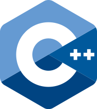

C++ (Сі-плюс-плюс) — мова програмування високого[1][2] рівня з підтримкою кількох парадигм програмування: об'єктно-орієнтованої, узагальненої та процедурної. Розроблена Б'ярном Страуструпом (англ. Bjarne Stroustrup) в AT&T Bell Laboratories (Мюррей-Хілл, Нью-Джерсі) 1979 року та початково отримала назву «Сі з класами». Згодом Страуструп перейменував мову на C++ у 1983 р. Базується на мові С. Вперше описана стандартом ISO/IEC 14882:1998, найбільш актуальним же є стандарт ISO/IEC 14882:2014. У 1990-х роках С++ стала однією з найуживаніших мов програмування загального призначення. Мову використовують для системного програмування, розробки програмного забезпечення, написання драйверів, потужних серверних та клієнтських програм, а також для розробки розважальних програм, наприклад, відеоігор. С++ суттєво вплинула на інші популярні сьогодні мови програмування: С# та Java.
Матеріал з Вікіпедії — вільної енциклопедії.
Скорочена довідка

Переваги та недоліки
Переваги мови C++
- Швидкодія. Швидкість роботи програм на С++ практично не поступається програмам на С, хоча програмісти отримали в свої руки нові можливості і нові засоби.
- Масштабованість. На мові C++ розробляють програми для найрізноманітніших платформ і систем.
- Можливість роботи на низькому рівні з пам'яттю, адресами, портами. (Що, при необережному використанні, може легко перетворитися на недолік.) Можливість створення узагальнених алгоритмів для різних типів даних, їхня спеціалізація, і обчислення на етапі компіляції, з використанням шаблонів.
- Підтримуються різні стилі та технології програмування, включаючи традиційне директивне програмування, ООП, узагальнене програмування, метапрограмування (шаблони, макроси).
Недоліки мови C++
- Наявність безліч можливостей, що порушують принципи типобезпеки приводить до того, що в С++ програми може легко закрастися важковловима помилка. Замість контролю з боку компілятора розробники вимушені дотримуватися вельми нетривіальних правил кодування. По суті, ці правила обмежують С++ рамками якоїсь безпечнішої підмови. Більшість проблем типобезпеки С++ успадкована від С, але важливу роль в цьому питанні грає і відмова автора мови від ідеї використовувати автоматичне управління пам'яттю (наприклад, збірку сміття). Так візитною карткою С++ стали вразливості типу «переповнювання буфера».
- Погана підтримка модульності. Підключення інтерфейсу зовнішнього модуля через препроцесорну вставку заголовного файлу (#include) серйозно уповільнює компіляцію, при підключенні великої кількості модулів. Для усунення цього недоліку, багато компіляторів реалізують механізм прекомпіляції заголовних файлів (англ. Precompiled Headers).
- Недостача інформації про типи даних під час компіляції (CTTI).
- Мова C++ є складною для вивчення і для компіляції.
- Деякі перетворення типів неінтуїтивні. Зокрема, операція над беззнаковим і знаковим числами видає беззнаковий результат.
- Препроцесор С++ (успадкований від C) дуже примітивний. Це приводить з одного боку до того, що з його допомогою не можна (або важко) здійснювати деякі завдання метапрограмування, а з іншого, в наслідок своєї примітивності, він часто приводить до помилок і вимагає багато дій з обходу потенційних проблем. Деякі мови програмування (наприклад, Scheme і Nemerle) мають набагато могутніші і безпечніші системи метапрограмування (також звані макросами, але макроси С/С++ вони мало нагадують).
- З кінця 1990-х в спільноті С++ набуло поширення так зване метапрограмування на базі шаблонів. По суті, воно використовує особливості шаблонів C++ в цілях реалізації на їхній базі інтерпретатора примітивної функціональної мови програмування, що виконується під час компіляції. Сама по собі ця можливість вельми приваблива, але, внаслідк вище згаданого, такий код вельми важко сприймати і зневаджувати. Мови Lisp/Scheme, Nemerle і деякі інші мають могутніші і водночас простіші для сприйняття підсистеми метапрограмування. Крім того, в мові D реалізована порівнянна за потужністю, але значно простіша в застосуванні підсистема шаблонного метапрограмування.
- Хоча декларується, що С++ мультипарадигмена мова, реально в мові відсутня підтримка функціонального програмування. Частково, даний пропуск усувається різними бібліотеками (Loki, Boost) що використовують засоби метапрограмування для розширення мови функціональними конструкціями (наприклад, підтримкою лямбд/анонімних методів), але якість подібних рішень значно поступається якості вбудованих у функціональні мови рішень. Такі можливості функціональних мов, як зіставлення зі зразком взагалі украй складно емулювати засобами метапрограмування.